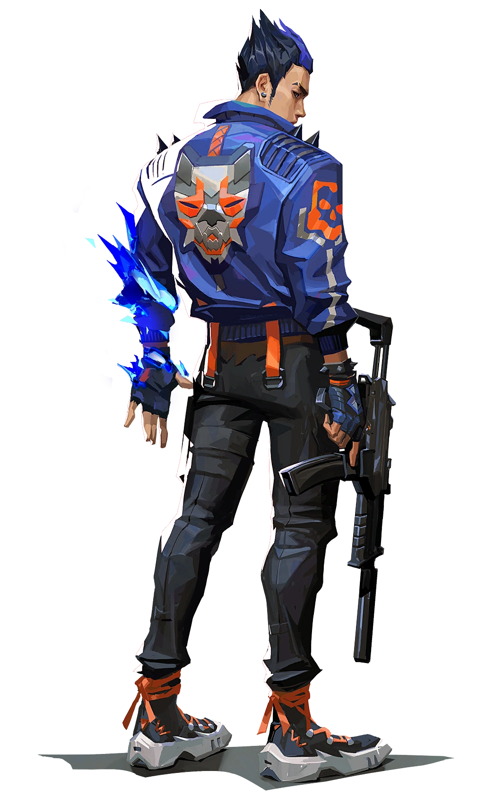
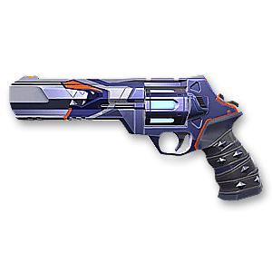

NO.14 // YORU
“I'll handle this!'”

-
Real NameKiritani Ryo
-
OriginJapan
-
AffiliationValorant Protocol
-
 Duelist MaleHardNumber 14
Duelist MaleHardNumber 14
Contract Skin

Biography
"Japanese native Yoru rips holes straight through reality to infiltrate enemy lines unseen. Using deception and aggression in equal measure, he gets the drop on each target before they know where to look."
Yoru is a duelist agent who specializes in faking out opponents and moving into unsuspecting positions. He has two abilities that allow him to move to a new location stealthily and another that is designed to make enemies think that he has moved. So keeping track of him is near impossible at times.
Abilities
BLINDSIDE
EQUIP to rip an unstable dimensional fragment from reality. FIRE to throw the fragment, activating a flash that winds up once it collides with a hard surface in world.
Damage: N/A
Duration: 1.75s Nearsight
Uses: 2
Reset: N/A
Cost: 250
GATECRASH
EQUIP a rift tether, FIRE to send the tether forward. ALT FIRE to place a stationary tether. ACTIVATE to teleport to the tether's location. USE to trigger a fake teleport.
Damage: N/A
Duration: 30s
Uses: 2
Reset: 40s
Cost: 150
Range: 3m
FAKEOUT
EQUIP an echo that transforms into a mirror image of Yoru when activated FIRE to instantly activate the mirror image and send it forward ALT FIRE to place an inactive echo USE to transform an inactive echo into a mirror image and send it forward. Mirror images explode in a blinding flash when destroyed by enemies.
Damage: N/A
Duration: 10s, 3.1s Nearsight
Uses: 1
Reset: N/A
Cost: 100
DIMENSIONAL DRIFT
EQUIP a mask that can see between dimensions. FIRE to drift into Yoru's dimension, unable to be affected or seen by enemies from the outside. REACTIVATE to exit Yoru's dimension early.
Damage: N/A
Duration: 12s, 0.8s Equip & Return time
Uses: 1
Detection Radius: 15m(only footsteps)
Cost: 7 Charges
HP: N/A